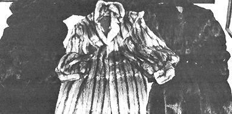
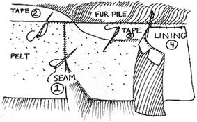

Putting aside any crass status motives, a fur coat is still one of the most practical possible forms of winter wear. Fur is windproof, waterproof and warm. It's also luxurious, sensuous and gives a lovely feeling to the wearer. What's more if you've been dreaming of a fur coat but you don't want to endanger any of our fellow mammals now scurrying around, you can have your cozy winterwear while doing the planet an ecological favor by recycling someone else's old, cast-off garment of 20 or more years ago for, possibly, that many more seasons' use.
Our hunting ground will be the second hand store, the Goodwill, the Salvation Army and rummage sales. If we're lucky we'll find our pelts made up into one or more of those big shouldered, Iona, flopping coats of the 40's and 50's. This is our raw material. We'll rip the old apart and make new.
Think about design (coat? cape? jacket?) and choose your heart's delight with one thought uppermost in mind: Simplicity. You'll be learning on this first venture. Keep it simple with a minimum of darts and details. Make a sketch of each pattern piece and indicate the required measurements. Take this information and a tape measure with you when you look for pelts so you'll be sure to pick a cast-off garment large enough to remake into your design.
Remember now: You're buying your fur already sewn into a hulking, swirling coat 20 or 30 years old. The raw material will be worn, torn . . . and inexpensive. Choose carefully and creatively. It takes imagination to see your coat in that sad old heap of beaver, seal or mink.
Most important is the suppleness of the pelts. Try to get inside the lining to see their back sides. If they're crackly or thin or weak, look for something else. The natural oils have probably dried out and the pelts will disintegrate as you're working on them. By the way, shorthaired furs are easier to work than longhaired ones.
Pick the coats up. Are they heavy or light in weight? The lighter the fur, the less poundage you'll be carrying on your shoulders. (Have you noticed? The heavier a garment, the quicker you get sick and tired of it.)
Check for bare and worn spots. Probably the front lapels, sleeve cuffs and neck edge will show the most wear but you can plan your pattern placement to avoid these areas. You won't be so lucky if the lower back, elbows and places where women wear their purses look tacky and flat. You'll have to incorporate such areas into your pattern and they'll look just as bad on the new coat.
The other major ingredient you'll need for this recycling project is taffeta or satin linin g . If you're a genuine bargain hunter, you'll pick this up for pennies at a remnant sale.
You'll also want, enough twill tape to face the raw edges of the fur, strong waxed thread , a seam ripper, thimble, tape or tailor's chalk, sharp needles and a razor blade .
(1) Cautiously separate fur from the old lining, tapes and padding with a seam ripper. You'll need to open all main seams: Shoulder, side, sleeve, etc. As you work, you can learn a great deal about handling fur if you'll note how the furrier sewed his seams, how he padded areas and attached linings. His knowledge is there, study it.
A WARNING! If, after opening the first three inches of seam, you find queer flakes and grains sifting out (and they look like the stuff that was in the wormy brown rice last summer), don't heave out the coat in queasy panic. It's only the sawdust or cornmeal that cleaners use to clean furs.
(2) Spread out the pieces on your work table, pile side down. They should all lay flat. If one doesn't it's probably because of a dart, which complicates things. Maybe you can keep the dart in for added fit. If not, open it and piece the fur. If the piece is well matched, it will be invisible from the fur side.
(3) Now, cut the lining and pelts to the pattern. Cut the pieces of the lining first. They will need seam allowances. The sections of fur will not, so after the lining is cut, remove the seam allowances from the pattern before cutting the pelts. Use tape or mark with tailor's chalk.
ANOTHER WARNING! Fur has a nap which runs down. From neck to hem, from shoulder to wrist. Always, always, down! So there'll be no turning the pattern pieces every which way to make them fit when cutting the pelts. If you try that, the fur on your finished masterpiece will run helter-skelter and the coat will look ghastly.
(4) Use a razor blade to cut the fur. Cut only the pelt and carefully separate the uncut fur with your fingers so that none of the pile is damaged.
(5) Sew the fur together with whipping stitches. Use a sharp needle, a thimble and strong waxed thread. This job will seem to take forever if you use small, neat stitches and catch only the pelt and not the pile. If it isn't taking forever, you're being sloppy and-in a few months-a seam will pop. It will be the mending of these poor seams, in that case, that will take forever.
(6) Sew twill tape to the edges of the fur using the same slow, patient stitches. Remember, the coat will last for years if it is well sewn in the beginning.
(7) Construct lining. Press seams. Attach lining to twill tape and hem it.
(8) Sew on hooks and eyes, snaps or frog closings and your new winterwear is done! Take care of it. Shake out the water when it gets wet and always hang the coat on a sturdy, padded hangar.
Once you get the knack of handling pelts, you won't have GRAVE DOUBTS about lack of experience and you can tackle those other furry dreams: A parka? Hats? Muffs? How about a quilt from all the scraps you'll have left over? Or puppets? A fur-covered chair? A fur-lined cloth coat? Be creative! Recycle those tattered and torn secondhand store treasures into practical garments and accessories. It will, admittedly, cost you a big hunk of time . . . but very little cash.
One last thought. Recycling old furs is inexpensive, lots of fun and yet another way of stretching the dwindling resources of Spaceship Earth . . . but new pelts? Be a hypocrite about fur! Protest the killing of endangered species! Fight it every way you can. Maybe, someday, the only new furs used by man will be from animals that die a natural death.
|
 |
 |
|